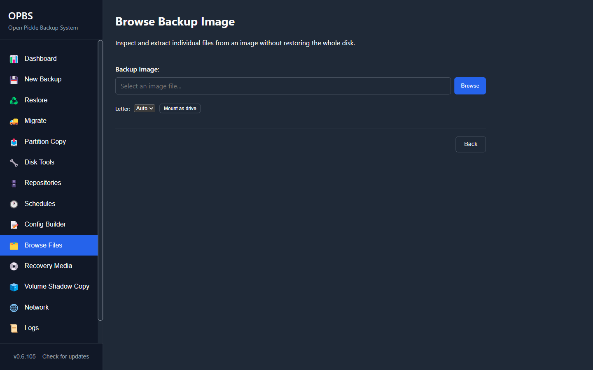

You do not have to restore anything. A backup is a file, and the files inside it can be opened and copied out one at a time.

This is the safe option.
Nothing is written to any disk. You open the backup, look inside it, and copy a file out to wherever you want it. If you are not sure whether you need a full restore, do this first.
Open OPBS and click Browse Files. Pick the backup image, pick the partition inside it, and you get a file list you can walk exactly like a folder. Select what you want and copy it out.
This is the quickest route and it works while Windows is running, because reading a backup does not touch the disks it came from.
If you already know where the file is, extract it directly:
OPBS.exe --cli browse "D:\backups\pc-2026-11-03.opbs" --partition 2 OPBS.exe --cli extract "D:\backups\pc-2026-11-03.opbs" --partition 2 --path "Users\you\Documents\tax-return.pdf" --out E:\rescued
The path is relative to the root of that partition, and it is the path inside the backup, not the path on your disk today.
A read-only mount attaches a partition from the image as a real drive letter. It uses no extra disk space — blocks are decompressed on demand — and nothing can be written to it.
This is the right choice when you are not sure which file you want and would rather browse. Eject it when you are done.
A backup holds whole partitions, so the folder structure inside it is the one the machine had when it was taken.
| What you want | Where to look |
|---|---|
| Documents, pictures, desktop | Users\<you>\Documents, Users\<you>\Pictures, Users\<you>\Desktop |
| Browser bookmarks and passwords | Users\<you>\AppData\Local — the browser's own folder there |
| App settings | Users\<you>\AppData\Roaming |
| Something on another drive | It is in a different partition in the same image — try the other partitions |
Not sure which partition?
The one holding Windows and your user folders is the large NTFS one. Small ones are boot and recovery partitions; they do not have your documents in them.
Extracted files do not keep their original permissions.
That is deliberate. A backup taken on one Windows installation carries that installation's account identifiers; copying them onto a different installation leaves folders owned by accounts that do not exist there, and you cannot open your own files. Extracted files instead inherit the permissions of the folder you extract them into.
Extracted files get the time you extracted them.
Also deliberate, for the same reason. A full partition restore writes the raw blocks and keeps everything exactly as captured — but for a single file, the destination's timestamps and permissions are the ones you want.
The same thing works from the recovery media. Boot it, choose [0] Check this machine to see what is attached, then [1] Restore this machine — the image opens for browsing before anything is written, and you can copy files out from there. Full steps in My PC won't start.
Related
Getting one file back is the most common reason to open a backup. The second most common is finding out too late that the backup was bad — Prove your restore works is how you avoid that one.